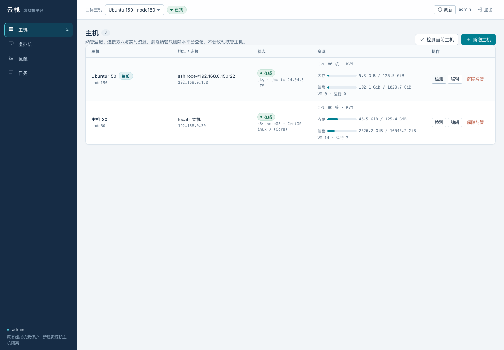
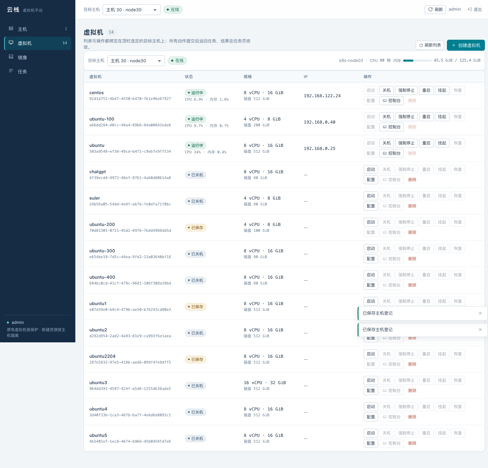
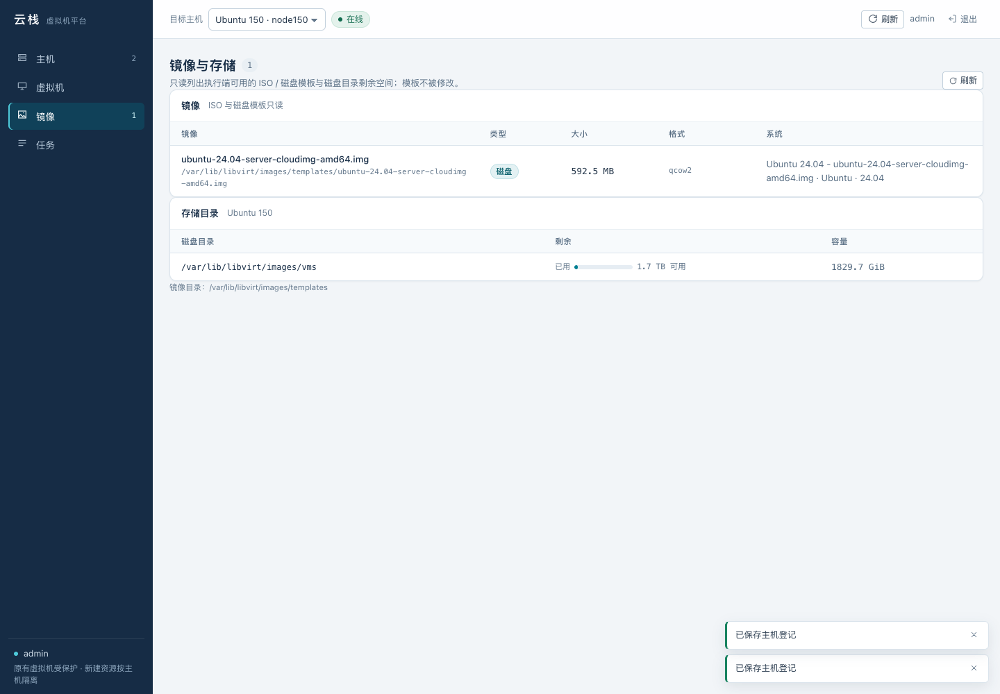
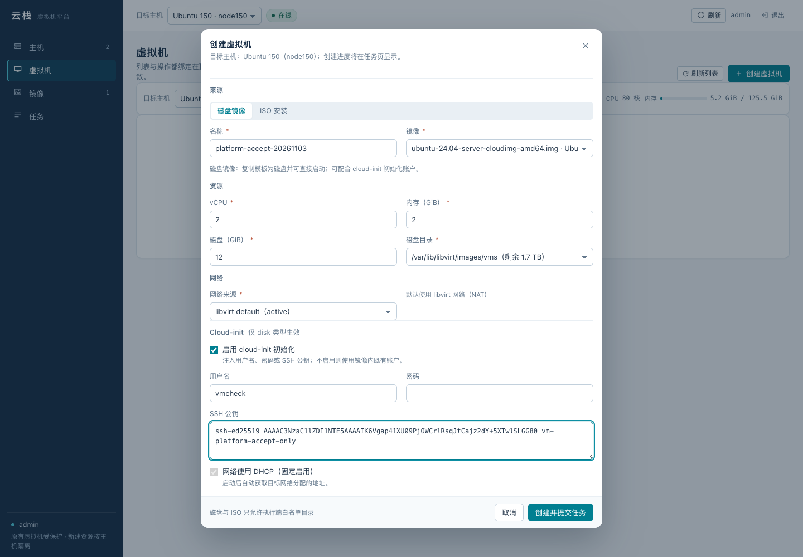
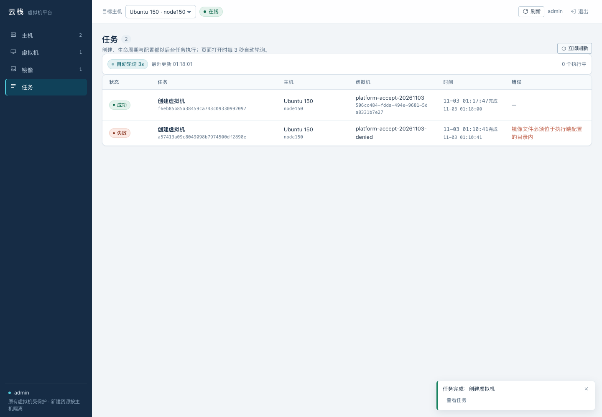
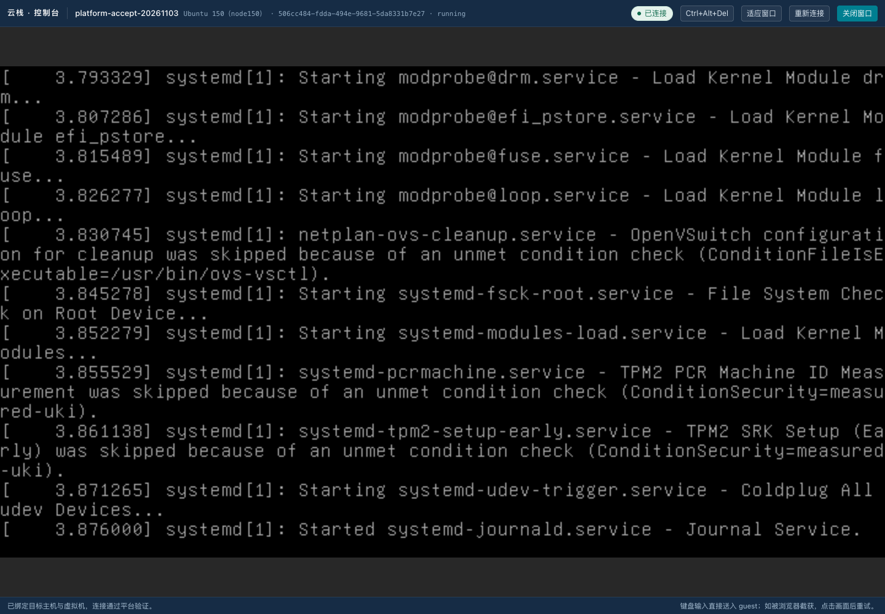
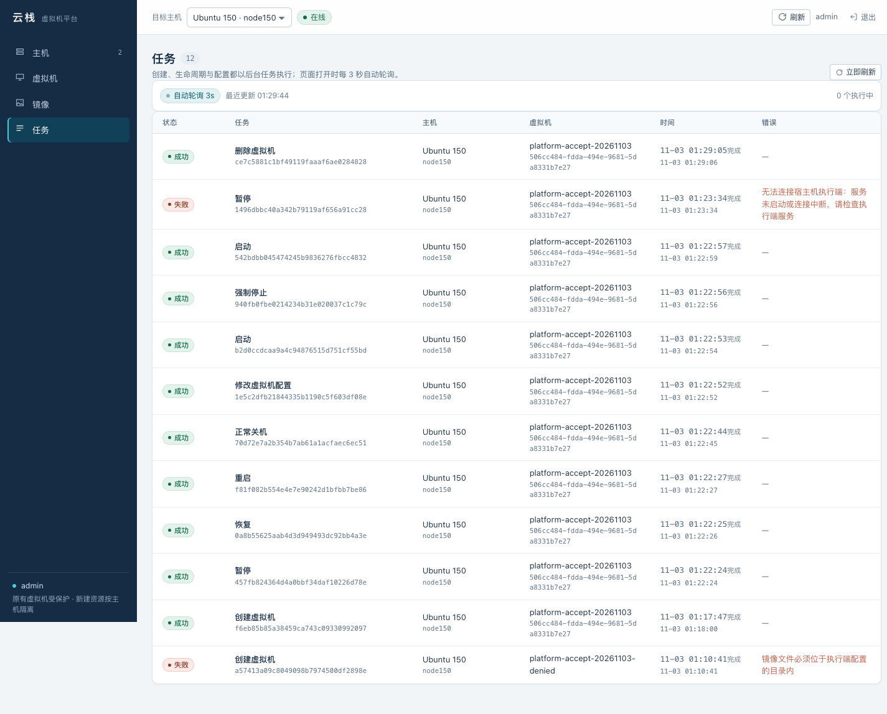

云栈平台 · 浏览器验收证据
真实入口：192.168.0.30:8089。以下截图来自正式入口，未使用演示数据。专用临时虚拟机位于 node150，现已完成验收并清理；最终结果见同目录 JSON 和上级 ACCEPTANCE.md。
最终双主机在线状态与真实资源（14／0 台 VM）
.30 原有虚拟机列表
.150 独立镜像与存储
绑定 node150 的创建表单
创建任务成功与目标身份
已连接的 VNC 控制台与主机／UUID 身份
最终任务状态与明确的故障原因